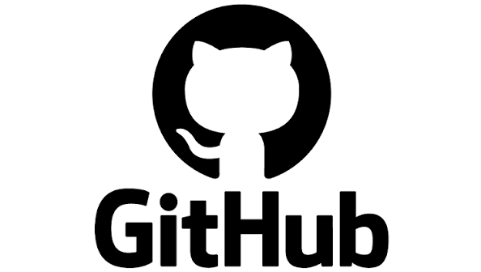

Este soy yo
¡Hola! Soy Michat Szaj. De día sobrevivo a las clases de desarrollo web y de noche limpio las calles de bugs y enlaces rotos. Esta es mi web personal, programada 100% por un humano real desde mi propia Batcueva (y no por una máquina morosa, que el Joker ya intentó hackearme el código). Si has llegado hasta aquí, bienvenido a Gotham.
Mis proyectos

Proyecto nº1
Solo te puedo dejar la landing page, porque si no, la verá el Joker...
Ver proyectoHabilidades (que llevo en el bat-cinturón)
Habilidades que manejo:
- HTML5
- Flexbox
- GitHub
Nivel de habilidad
| Habilidad | Nivel |
|---|---|
| HTML5 | Intermedio |
| Flexbox | Justo empezando |
| Github | Bastante avanzado |